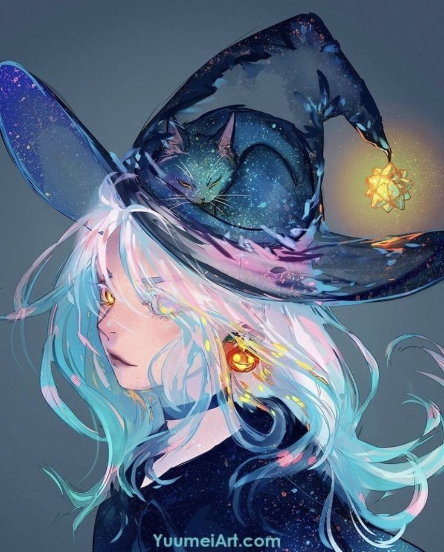

A few word about the circus owner - The White Witch
The Wandering Circus - seems like a typical, enjoyable circus, yet nobody is familiar with it or its proprietors. However, the upper class is quite aware that this circus is a creation of each person's deepest soul, and that once you have the owner's invitation, you have the option to trade for anything you want, regardless of beauty, wealth, or power. Some people have seen instances where a sick woman who had been bedridden all day was able to get out of bed the following morning, healthy; a family that was on the verge of bankruptcy who became wealthy and powerful after a short period of time; and an individual who was initially very ugly who transformed into a top-notch beauty within a month and successfully rose to the status of a lady in the upper class.
They just knew that if they received an invitation, they would get what they wanted, but they were unaware that the woman went insane after a while and ended up being hospitalized; that family was unable to have an elite son and become a family without offspring; the young master first fell in love with the woman's beauty and married her, but later he grew increasingly annoying since his wife was mute. As a result, she became separated from her family and no one could care and love her.
As the rumours of a circus continued to circulate, more and more details were added, making it even more difficult for listeners to distinguish between fact and fiction. However, someone corroborated a picture of a girl dressed as a witch with shoulder-length white hair below a very pronounced hat appeared when individuals who were eligible to attend The Wandering Circus. The little girl performed an incredibly accurate aristocratic bow with the words on her lips as she placed one hand on her chest, one foot deep into the other, and her back slightly bent.
"Will I have the honor to invite you to my circus?"
Facts About The Wandering Circus
- The Wandering Circus consists of 5 members - The White Witch, The Gluttony Monkey, The Smeraldo Flower, The Sad Clown and The Black Fox
- The purpose of the circus is to find the purest abd most bookish soul
- Once you qualify, you will receive an invitation to go to the circus. Once you get there, the deal between you and the circus officially begins
- The circus does not have a fixed place. All five members like to travel, sometimes in the South, sometimes in the North, like wandering children without help, so they named it Wandering Circus.